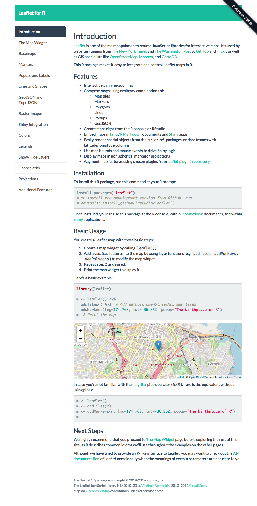
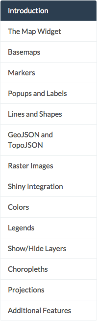
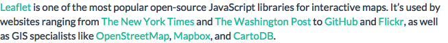

The webshot package makes it easy to take screenshots of web pages from R. It requires an installation of the external program PhantomJS (you may use webshot::install_phantomjs() to install PhantomJS, if you do not want to download the binary and put it in PATH manually).
The main function in this package is webshot(). Below are some examples of taking screenshots of the website http://rstudio.github.io/leaflet/:
library(webshot)
URL <- "http://rstudio.github.io/leaflet/"
# Might need a longer delay for all assets to display
webshot(URL, delay = 0.5)







If you are familiar with JavaScript, you may run some JavaScript code on the page before taking the screenshot. Here is an example of logging into reddit:
# Send commands to eval
webshot("http://www.reddit.com/", "reddit-input.png",
selector = c("#search", "#login_login-main"),
eval = "casper.then(function() {
// Check the remember me box
this.click('#rem-login-main');
// Enter username and password
this.sendKeys('#login_login-main input[type=\"text\"]', 'my_username');
this.sendKeys('#login_login-main input[type=\"password\"]', 'password');
// Now click in the search box. This results in a box expanding below
this.click('#search input[type=\"text\"]');
// Wait 500ms
this.wait(500);
});"
)You can also take screenshots of Shiny apps using the appshot() function, e.g.
There are two functions resize() and shrink() to manipulate images, which require GraphicsMagick (or ImageMagick) and OptiPNG, respectively. A simple example: